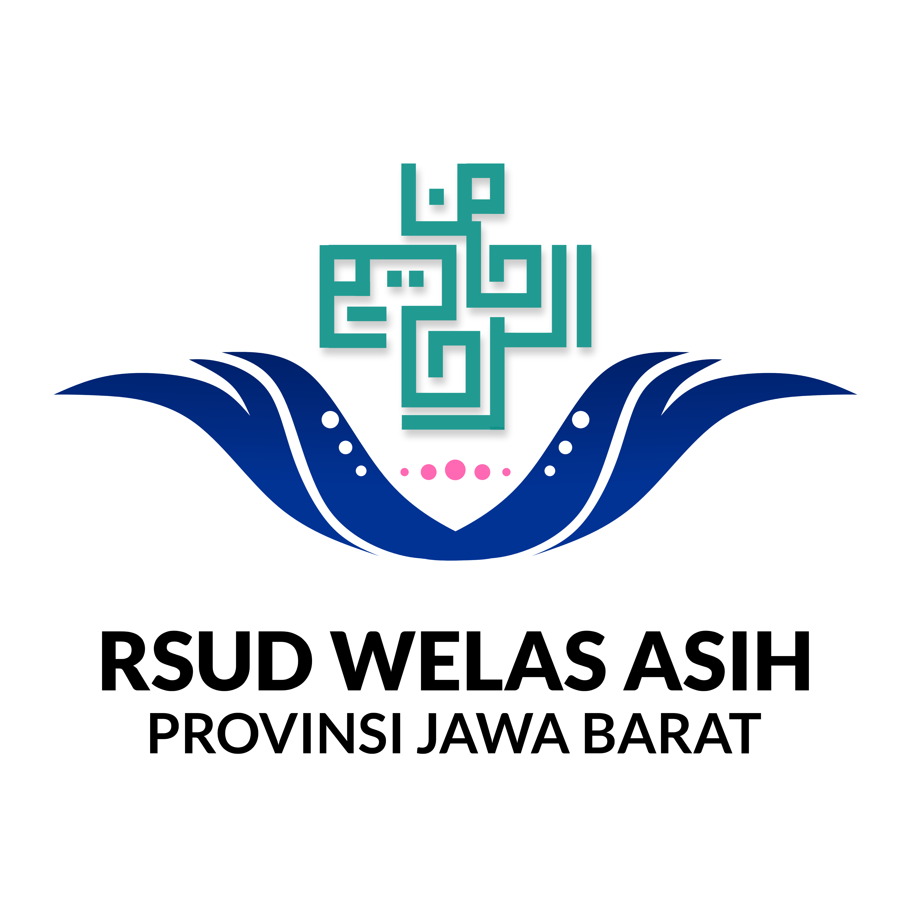

Pusat layanan terpadu keperawatan RSUD Welas Asih. Silakan klik kartu aplikasi yang ingin Anda tuju untuk membuka sistem.
Self-Assessment & Mental Recharge Program
Platform pendampingan psikologis dan evaluasi kelelahan kerja (burnout) perawat menggunakan instrumen Maslach Burnout Inventory (MBI) terstandarisasi.
Mutu Asuhan & Keselamatan Pasien
Menjamin mutu asuhan, keselamatan pasien (IPSG), serta kepatuhan Standar Prosedur Operasional (SPO) melalui bimbingan reflektif klinis, perekaman suara, dan pengesahan digital resmi.
Komite Keperawatan & Manajemen Ruang Rawat Inap
RSUD Welas Asih Provinsi Jawa Barat · Sistem Informasi Manajemen Terpadu